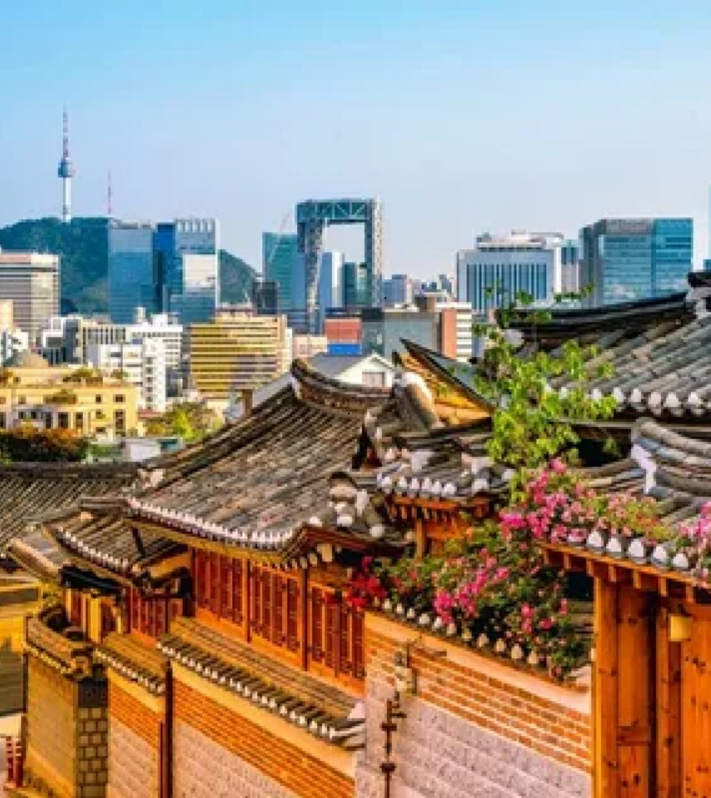
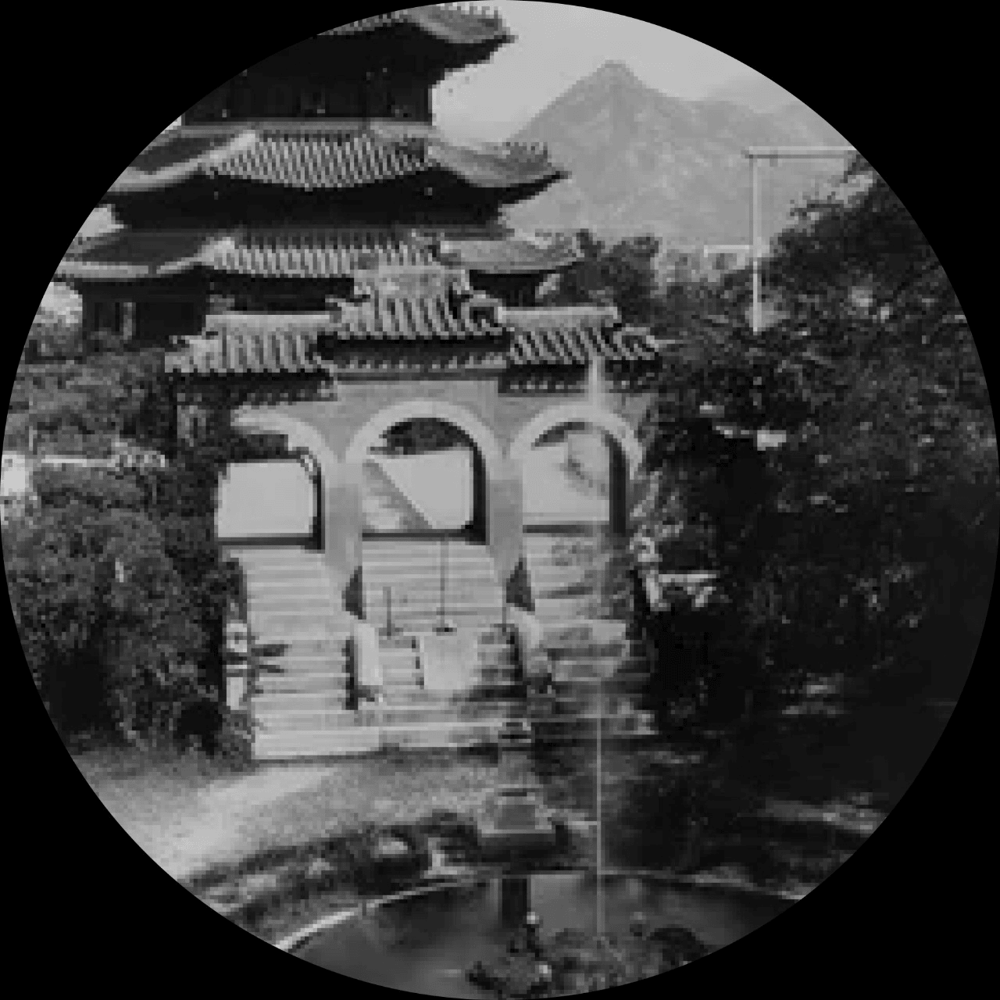

History of Seoul
Первое название города — Виресон, он был столицей государства Пэкче, начиная с 370 года до н. э. Во времена Корё был известен как Хансон. Во времена династии Чосон, был столицей государства. В годы японского колониального правления на территории города располагалась административная единица Кёнсон, название Сеул было окончательно утверждено в 1946 году. Пэкче, одно из трёх корейских королевств, было основано в 18 году до н. э., со столицей в городе Виресон. С тех пор сохранились развалины городских стен. Управление городом вскоре перешло от Пэкче к Корё, а затем к Силла. В XI веке правительство Корё, построило крепость, известную как «Южная Столица». Когда Чосон сменила Корё, столица была перенесена в Сеул, где оставалась до конца правления династии.Изначально город был полностью окружён крепостной стеной высотой до семи метров для защиты населения от диких животных, разбойников и вражеских армий. Затем город разросся за стены и, хотя они сейчас не существуют (кроме небольшого участка к северу от центра города), крепостные ворота существуют по сей день, самые известные из них: Намдэмун и Тондэмун.Во время Корейской войны Сеул дважды переходил в руки северокорейских и китайских войск. Во время нахождения в городе китайских войск военным комендантом города был советский кореец Дю Гван Му. В результате боевых действий город был сильно разрушен. Вдобавок, поток беженцев заполнил город, увеличив численность населения до 2,5 миллионов, большей частью бездомных. После войны Сеул был быстро восстановлен. По старой конституции КНДР Сеул являлся столицей Северной Кореи. В 1988 году Сеул стал столицей XX летних Олимпийских игр, а в 2002 году — одним из мест проведения чемпионата мира по футболу.


Sights of Seoul
Кёнбоккун (Дворец Кёнбок) — дворцовый комплекс, расположенный на севере Сеула. Был главным и крупнейшим дворцом династии Чосон, в котором жила королевская семья. Построен в 1394 году по проекту корейского сановника Чон Доджона. Сеульская телебашня, официально YTN Seoul Tower, также широко известная как Башня Намсан на горе Намсан в центре Сеула. Высота башни достигает 236 м. Построенная в 1971 году. Чхандоккун — дворцовый комплекс внутри большого парка в Сеуле. Является одним из «Пяти Больших Дворцов», построенных ванами династии Чосон. Сооружение дворца началось в 1405 году и было закончено в 1412 году. Мост «Фонтан радуги» — самый длинный мост-фонтан в мире (длина — 1140 м). Официально занесен в Книгу рекордов Гиннесса. В отличие от обычных фонтанов, бьющих вверх, струи Фонтана радуги направлены в стороны. Направление и подсветка струй имеют индивидуальное программное управление. Чхонгечхо́н — ручей в центре Сеула, преобразованный в общественное пространство для отдыха, растянувшееся на 11 километров. Открыт после широкомасштабной реконструкции в 2005 году стоимостью около 280 млн долларов. Является одной из главных достопримечательностей города. Тондэмун также Хынъинджимун — ворота в центре Сеула, один из символов города.Тондэмун был построен в 1398 году, реконструирован в 1453 году, а современный облик обрёл в 1896 году.